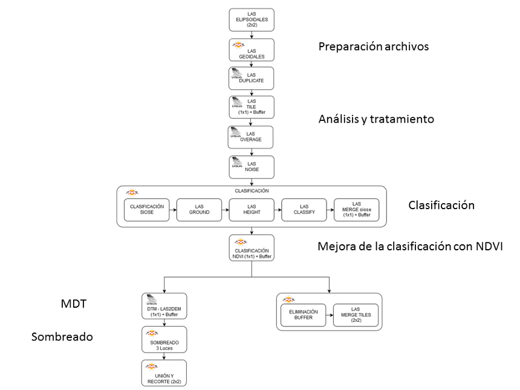

Introduction
The irruption of LiDAR (Light Detection and Ranging), has revolutionized the capture of data in the cartographic field, allowing the acquisition of altimetric information of the surface in the form of a three-dimensional cloud of points.
This technology that integrates a laser scanner, together with precise positioning systems GNSS (Global Navigation Satellite Systems) and an INS Navigation System (Inertial Navigation System), allows to measure the relative distance from a laser emitter to an object or surface. And it represents spatially the shape of the terrain and the elements that exist on it.
Once the points cloud has been captured, it is necessary to classify it, discriminating the points referring to the ground, from the rest. This procedure is carried out mainly by means of automatic analysis processes, or by resorting to manual editing in those cases in which it is not possible to perform an automatic classification.
For a good definition of the processes, it is necessary to take into account that the result is conditioned by the parameters that define the capture properties of the points (angle, scan direction, flight height, axis of the flight line, etc.).
LiDAR flight
The LiDAR flight of the Autonomous Community of La Rioja was made in September 2016, with a point density of 2 pulses/m² together with oblique RGB and near infrared photographic images.
Characteristics
- Territorial coverage: 5,034 km² (C.A. of La Rioja).
- Point density: 2 pulses / m².
- Date of flight: September 2016.
- Reference geodetic system: ETRS89.
- Elevation: Ellipsoidal height referred to ETRS89 (Ellipsoid GRS80).
- Distribution of blocks: 2 x 2 km files.
- Nadiral horizontal precision: RMSE (X, Y) ≤ 20 cm.
- Height precision: RMSE Z ≤ 0.15 cm.
-
Photogrammetric image: 0.50 m (red, green, blue and infrared).
** RMSE (Mean square error)
Methodology
Processing consists of LiDAR files preparation for further analysis and treatment of the data.
The processing is carried out with the LAStools function suite from Rapidlasso GmbH. It is a set of multicore applications, which are executed from the command line and can be sequenced using scripts, to execute batch processing.
The control and management of works has been designed with ETL (Extract, Transform and Load) workflows using FME Safe Software. LAStools functions have been inserted through Python programming.
The starting information is in ellipsoidal heights referring to ETRS89 European Terrestrial Reference System 1989 (Ellipsoid GRS80).
The data files are expressed in LAS format (LASer File Format Exchange Activities)), being organized in 2x2 km space grids.
The process of classification and generation of the digital terrain models is done according to the following scheme of tasks:
